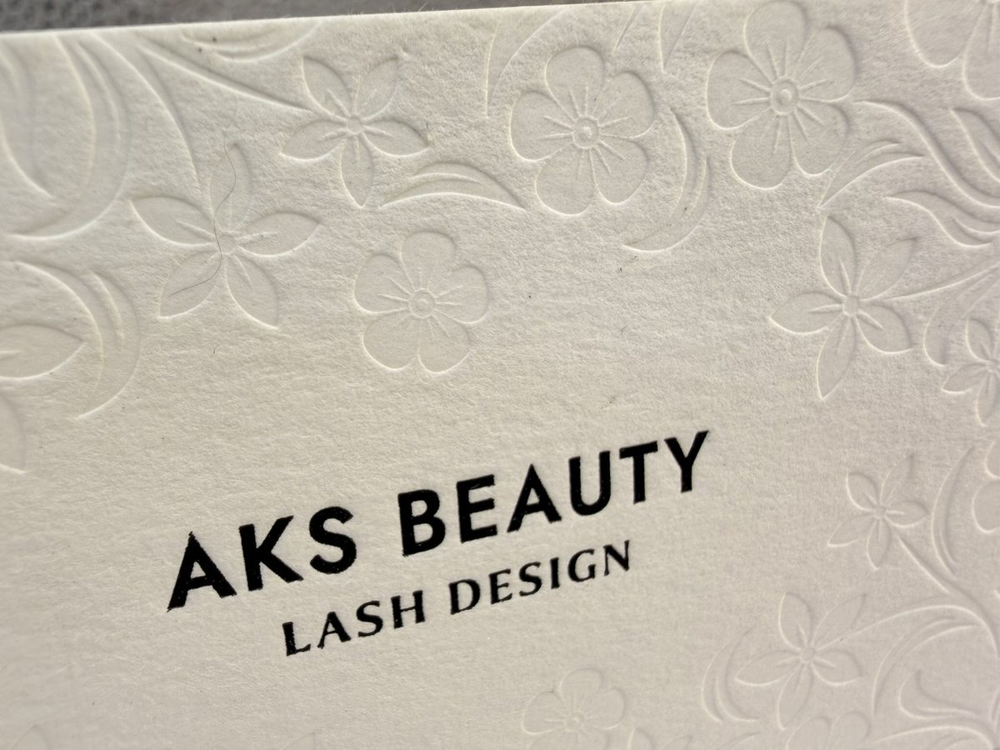
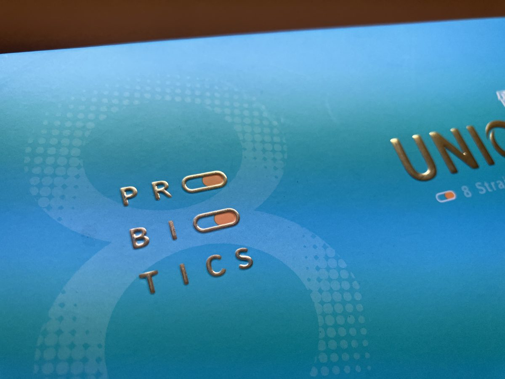
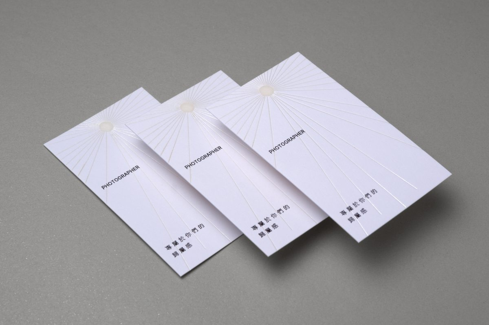
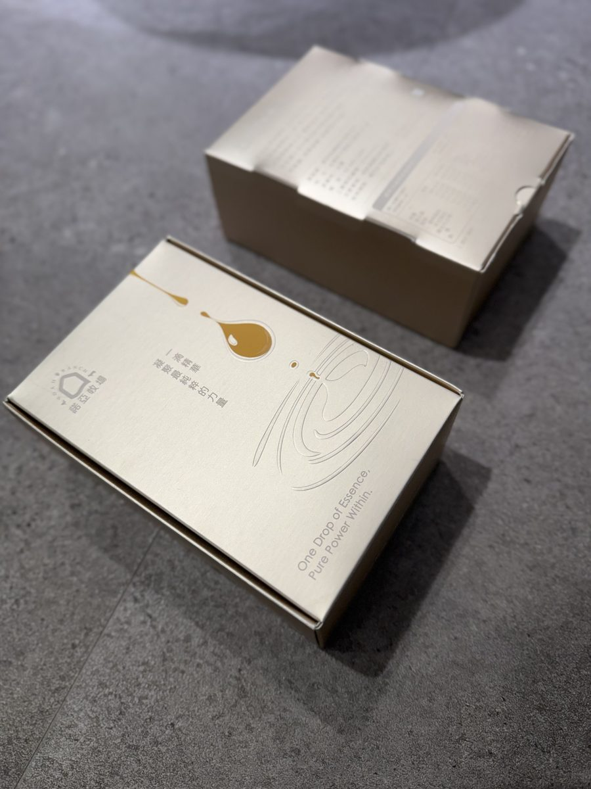

打凸、打凹、燙金，一次分清楚
打凸（Emboss）是用一組互相咬合的公母鋼模，從紙的背面往上壓，讓圖文浮出紙面；打凹（Deboss）則相反，從正面往下壓，讓圖文沉入紙面。兩者都不上任何顏色，靠光影和觸感說話。
| 工藝 | 視覺 | 觸覺 | 適合的感覺 |
|---|---|---|---|
| 打凸 Emboss | 圖文浮起，光影立體 | 凸起 | 大器、有存在感 |
| 打凹 Deboss | 圖文沉入，內斂陰影 | 凹陷 | 低調、精工 |
| 燙金 Foil | 金屬光澤 | 微墊壓感 | 華麗、貴氣 |
三者不是互斥的選擇——燙金加打凸的對位疊加，正是精品包裝最常見的高階組合：燙金給光，打凸給形，一個位置同時亮起來、立起來。



打凸的計價，和燙金哪裡不一樣？
打凸一樣要開模（公母一組），也一樣有上機的工繳，但有一個對預算友善的特點：一般圖案的打凸，喜成的工繳主要看道數與數量，不隨圖案面積跳價（滿版大面積的特殊情況另議）。也就是說，logo 壓大一點、壓小一點，加工費通常是一樣的——設計師可以放心把立體感做足。
搭配燙金時怎麼算？燙金一道、打凸一道，各自是獨立的作業道數。想知道組合起來的價格，加官方 LINE 索取自助報價工具，選好規格即時出價。
什麼紙適合打凸？
- 厚磅數的紙效果最好——紙有足夠的身體，凸起才深、才挺。名片與卡片建議往厚的選。
- 長纖維的美術紙壓出來的邊緣最漂亮，不易破裂。
- 薄紙也能壓紋，但立體深度會收斂，適合細緻的滿版紋理而非深浮雕。
喜成可處理 50 磅到 500 磅的紙張——從薄如內襯紙到厚如裱合卡都壓得動。

設計打凸時的三個建議
- 線條不要太細——過細的線壓不出立體感，也容易把紙壓破。
- 留意背面——打凸會在背面留下對應的凹痕，雙面設計時要把位置錯開，或乾脆讓凹痕成為設計的一部分。
- 和燙金疊加時，檔案分層——燙金版和打凸模各自獨立製作，設計檔請把兩個圖層分開標示。
常見問題
打凸和壓紋是同一件事嗎？
原理相同，都是鋼模壓紙。習慣上「打凸／打凹」指局部圖文的立體，「壓紋」常指較大面積的紋理。喜成兩種都做，統稱壓凸工藝。
打凸可以不搭配印刷、單獨做嗎？
可以。全素的紙只做打凸（素壓）近年非常受歡迎，乾淨、安靜、有質感。搭配素燙（烙印）也是好選擇，詳見燙金完全指南。
已經印好的成品可以拿來加工打凸嗎？
可以，喜成本來就常替同業與設計師做來料加工。寄成品或半成品過來，對好位置就能上機。詳見同業代工專區。